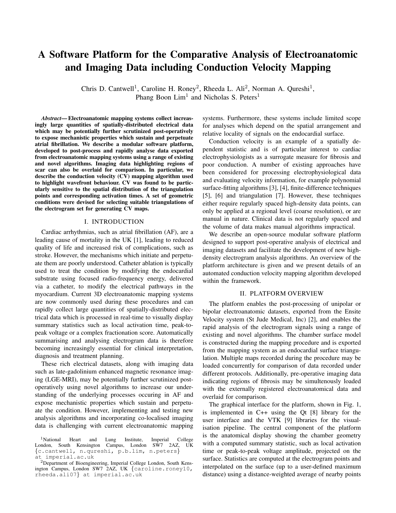

Is this the right demonstration paper?
A compact biomedical geometry algorithm that connects Mathematica reproduction, selective Lean proof, production C++, and Parasoft verification.

Small enough to finish—rich enough to matter
Concrete algorithm
Three-point conduction speed and direction on a 3D triangle, with explicit geometric filtering.
Biomedical relevance
Electroanatomic mapping for atrial fibrillation provides a credible safety-sensitive context.
Production connection
The original platform was implemented in C++ with Qt and VTK, making the final C++ phase natural.
Excellent end-to-end fit—not an exact clinical reproduction
Mathematica
Ideal for geometry, synthetic wavefronts, high precision, noise sweeps, and reference exports.
Lean 4
Useful for selected geometric properties, but the paper itself is not theorem-heavy.
C++ + Parasoft
Strong numerical, boundary, robustness, static-analysis, and coverage targets.
Exact paper figures
Patient data and source are unavailable except by request.
Overall demonstration
Best presented as algorithm verification using known synthetic ground truth.
Every phase has a real job
Build a stronger oracle than the paper provides
Known synthetic truth
- Generate irregular electrode points.
- Assign activation times from a wavefront with known speed and direction.
- Recover the wavefront and quantify error.
- Add controlled coordinate and timing noise.
Executable evidence
- Exact and high-precision formulations.
- Accepted/rejected triangle visualization.
- Error versus noise and degeneracy plots.
- Golden, boundary, and invalid vectors for C++.
Formalize the scientific invariants—not every calculation
Useful proof targets
- Normal is orthogonal to both triangle edges.
- Constructed direction lies in the triangle plane.
- Quality ratio is invariant under uniform scaling.
- Ideal planar wavefront recovery under explicit assumptions.
Keep expectations honest
- The paper has no formal theorem section.
- Real-number proofs do not prove IEEE-754 execution.
- Clinical conclusions are empirical, not Lean targets.
- Blocked claims remain visibly blocked.
The algorithm has exactly the right failure surface
Numerical hazards
Small time differences, small sin(theta), rounding outside the acos domain, overflow, and non-finite values.
Geometric hazards
Collinear points, near-degenerate and elongated triangles, orientation, permutation, and unit conversion.
Verification evidence
Static analysis, golden and property tests, runtime checks, branch/condition coverage, and justified suppressions.
Mathematica provides
High-precision expected values and justified tolerances.
Lean provides
Properties that become concrete C++ test obligations.
Two issues make the demo more credible
Unavailable clinical evidence
- No patient electrode dataset.
- No EnSite export samples.
- No MRI registration data.
- Source code is “available upon request.”
Consequence: Figures 4–6, 0.61 m/s average, and 70% overlap cannot be independently reproduced.
Formula interpretation
- The printed
tan(alpha)needs unambiguous parentheses. vdenotes both scalar speed and a later vector.xpq − xpsappears directional, not scaled to physical speed.- Orientation and time-sign conventions are implicit.
Consequence: derive and document the convention before coding.
Prove the kernel before rebuilding the platform
Include now
- Figure 3 geometry and all four filters.
- Synthetic planar wavefronts and noise.
- Mathematica notebook, package, audit, and exports.
- Selected Lean proofs with a pinned toolchain.
- Standalone C++ core and CMake tests.
- Parasoft reports and cross-language comparison.
Defer
- Qt interface and complete VTK visualization.
- EnSite file-format reverse engineering.
- MRI registration.
- Patient-specific Figures 4–6.
- The reported 70% overlap result.
- Any claim of clinical validation.
What a convincing demo must prove
Start with scope, evidence, and release gates
Full prompt: START_PROCESS_PROMPT.md